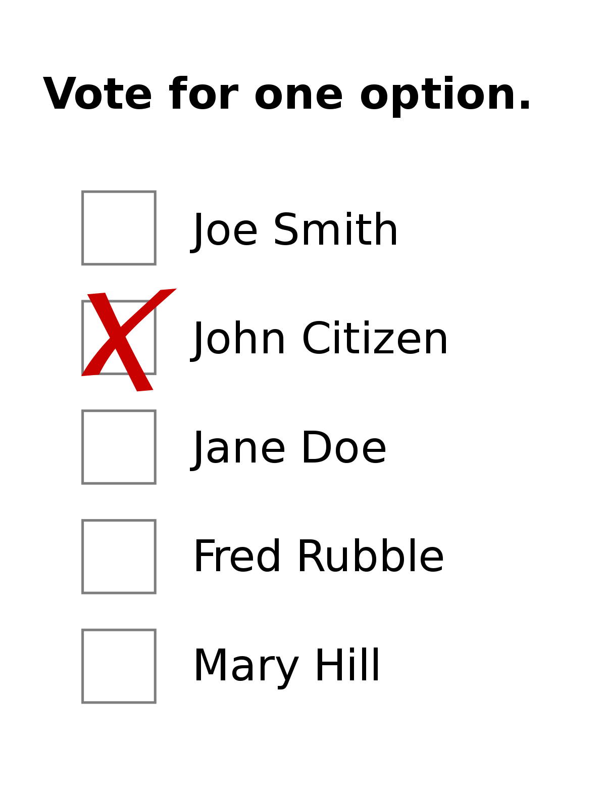
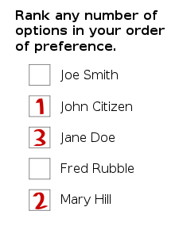
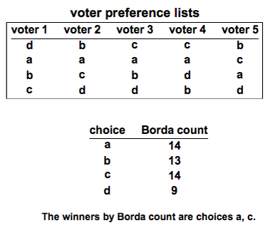
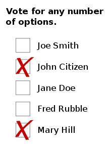
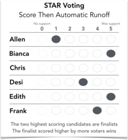

Descriptions of Polling Systems
First Past The Post (FPTP or FPP)
Set a margin of which if the choice gets more than x number of votes or a certain percentage of votes, it wins. You will list out the choices and the voters will have access to vote for one of the options. If an option is able to surpass the threshold, it is declared winner.
Instant Runoff Voting (IRV)
This system takes multiple rounds of voting to determine a singular winner (need more than two options for this method). Voters will get the list of candidates, and they will choose their top choice and their second choice. If a choice gets more than half of all of the top choice votes, it automatically wins. If not, the choice with the least number of overall votes. Repeat this until there are two options left. Then the voters have one vote, and the one with more than half of the votes wins.
Borda Count
given a set of X choices, rank the choices from 1 to X. The higher the ranking, the more points are allotted for the choice. At the end of voting, add up the points and the choice with the most points is the winner.
Ranked Pairs
Each voter is going to be presented with two options (A or B). The voter is going to pick which of the two choices they prefer. When a choice is picked, it is given a point. This repeats for every combination of pairs, and the choice that has the most points wins.
Approval Voting
Each voter picks which choices they approve of (pick 1 or more). For every pick, the choice is given a point. The choice with the most points is the winner.
Score Voting
For every choice, a voter rates the choice on a scale from 0 - 9 (0 is the worst and 9 is the best). All of the voters’ scores are averaged, and the choice with the highest average score wins.
